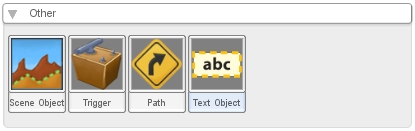
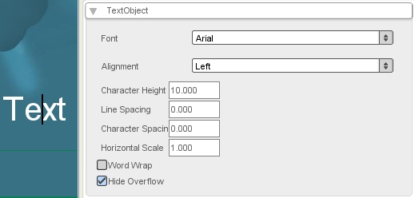

Adding a Text Object
Click on the "Create" tab. Scroll to the bottom. Select "Text Object."

Drag it onto the scene and type in your text.

With your text object selected, click the "Edit" tab. You can change the font, alignment, size, word wrap, etc of this text object.